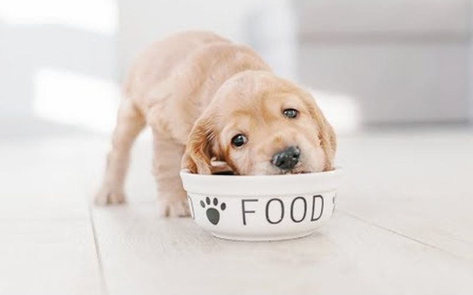
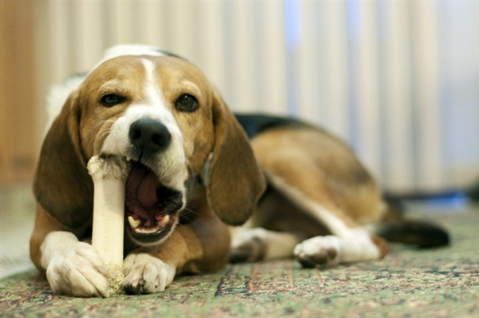

Đối với từng giai đoạn phát triển sẽ có những chế độ chăm sóc khác nhau. Nên bổ sung thêm bột dinh dưỡng cho chó để thú cưng luôn đầy đủ dưỡng chất cần thiết
- • Dưới 2 tháng tuổi: cho ăn 6 lần/ngày, mỗi lần cách nhau 3 – 5 giờ.
- • Từ 2 – 4 tháng: cho ăn 5 lần/ngày, mỗi lần cách nhau 4 giờ.
- • Từ 4 – 6 tháng: cho ăn 4 lần/ngày
- • Từ 6 – 10 tháng: cho ăn 3 lần/ngày.
- • Từ 10 tháng trở lên: cho ăn 2 lần/ngày như đối với chó lớn

Có thể một tuần cho chó con ăn một bữa ăn no hơn bình thường và ăn thêm một quả trứng gà. Nhưng phải nấu chín sau đó cho ăn tái dần cho đến khi có thể ăn sống không sao cả. Chó con
sau 5 tháng có thể bổ sung hàng tuần một ít thịt bò, lợn sống nhưng phải thật tươi với cường độ tăng dần đều.
Bữa ăn của chó thường kéo dài không quá 5 phút.
Nếu chó ăn hết sạch và còn hơi thòm thèm là đủ.
Sau bữa ăn nên cho chó con chạy tự do và vệ sinh để tiêu hóa thức ăn. Sau khi đi dạo buổi tối có thể cho chó uống một ít sữa hoặc nước đường pha loãng. Nếu chó con ăn xong mà còn
thừa thức ăn, đem đổ đi và bữa sau phải giảm định lượng xuống cho phù hợp.
+Những thức ăn cấm kỵ đối với chó
- • Thức ăn nóng, lạnh, đồ ăn cay, mặn, đồ ăn ngọt, các đồ hun khói.
- • Các loại cá nước ngọt. Chỉ nên cho ăn các loại cá biển đã nấu chín.
- • Không nên cho chó ăn quá nhiều mì, các loại đậu, bánh mỳ trắng, khoai tây…
- • Không được cho chó ăn thịt mỡ lợn, cừu, trứng gà sống.
- • Trong thức ăn chó không nên cho các loại gia vị như ớt, sốt cà chua cay, hạt tiêu…
- • Không cho chó ăn các loại thực phẩm ôi thiu, quá hạn sử dụng.
- • Nhất quyết không được cho chó ăn các loại xúc xích, giò… bởi vì các loại thực phẩm này rất độc hại đối với chó. Chúng làm hỏng gan và có thể làm cho chó chết ngay trước khi trưởng thành

- • Không nên cho chó ăn xương. Lý do đầu tiên là do chúng không thể tiêu hóa hấp thụ được. Thứ 2 là xương có thể gây nên chứng táo bón, tắc ruột…Đặc biệt nguy hiểm là các loại xương ống. Nhất là những loại như xương gà, có thể vỡ ra thành những mảnh sắc nhọn chọc thủng ruột.
- • Không được cho chó ăn các sản phẩm ngọt, nhất là các loại kẹo. Đồ ngọt làm mất đi sự ngon miệng và phá vỡ quá trình tiêu hóa. Ngoài ra chúng còn làm hỏng men răng và có ảnh hưởng xấu đến mắt (làm chảy nước mắt).